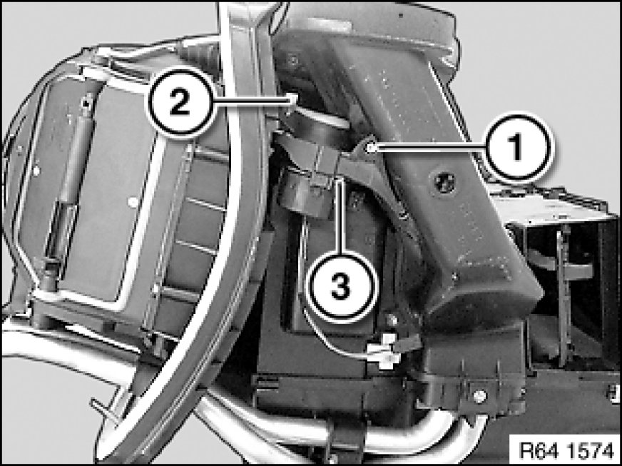

Driver Side
64 11 829 - Replacing actuator drive of ventilation flaps

Necessary preliminary tasks:
- Remove trim panel for pedal assembly 51 45 185 Removing and Installing/Replacing Panel For Pedals
- Remove lower section of steering column trim Removing and Installing/Replacing Lower Section of Steering Column Trim

Note:
Heater is removed for purposes of clarity.
Release screw (1).
Unclip adjusting clasp (2) and feed out servomotor (3).